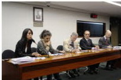

|
|
|
Browsing
Contact Us |
Campaigners |
Face to Face |
Tribune |
Interview |
News |
On the Web |
One Million |
Report
Farsi | Français | German | Italian | Spanish | العربية Also in this section
|
 President Dilma; Please Keep Your PromiseBy Parvin Ardalan and Hadi Ghaemi Tuesday 1 March 2011 View online : International Campaign for Human Rights in Iran Having spent a week in meetings with members of Brazilian civil society, government officials, parliamentarians, and journalists, we are convinced that Brazil’s role in addressing Iran’s grave human rights crisis is significant and more important than at any other time. Iran’s human rights crisis involves unprecedented executions, one person hanged every eight hours since 1 January 2011. More than 500 prominent intellectuals, journalists, students, and women’s rights defenders are imprisoned. There is an absolute lack of freedom of assembly, severe censorship, and discriminatory laws that value a woman as half a man. We, as Iranian human and women’s rights defenders, are in Brazil, in partnership with the NGO Conectas Direitos Humanos, to urge the government to co-sponsor and vote positively on an upcoming UN resolution at the Human Rights Council in Geneva to appoint a special mandate to monitor and report on Iran’s human rights crisis. During our meetings in São Paulo and Brasília, we have reaffirmed how similar the Iranian struggle for human rights and democracy is to Brazil’s own recent history. With President Dilma’s experience as a former political prisoner and victim of torture, as well as a woman tangibly familiar with discrimination against women, we are heartened at the understanding and solidarity we have received during our meetings. Yet, the government’s position on the UN resolution seems to be undecided, while at the same time there appears to be a serious momentum and sincere intent to act in its favor. We want to address two hesitations that could be impacting the government’s concerns with regards to its impending decision. The first concern is that Iran will stop its dialogue with Brazil and close the door on various issues of mutual concern, such as Iran’s nuclear program. Brazil’s dilemma, we are told, is whether to support the passage of a multilateral resolution aimed at protecting Iranian citizens from widespread violence, or to maintain access to Iranian government officials on nuclear proliferation. This dilemma is falsely construed. The door will not be shut on Brazil because it is critical for Iran to have Brazil emerge as a major power to alter the current domination of traditional powers. If Iran shuts the door on Brazil, it will truly isolate itself, and will demonstrate that it is, for instance, not interested in a peaceful and rational solution to the nuclear crisis. Given Iran’s domestic turmoil, as well as the popular uprisings throughout the Middle East, the government simply cannot afford such a miscalculation. The second concern is that if a Special Reporter is assigned to monitor and report the human rights situation in Iran, then the Iranian government will respond by increasing its violations and thus the suffering of the Iranian people will increase as a result of this UN action. As Iranians who have witnessed the positive impact of international solidarity and action on behalf of victims of human rights violations, we find this argument misguided. Let’s not forget that the Iranian government today is trying to claim the mantle of various uprisings in the Middle East and present itself as a role model for these countries. It will certainly be hard pressed to promote such claims if it shuts out the anticipated UN monitor and singles itself out as a country with a continued policy of zero cooperation with UN human rights mechanisms. Furthermore, there are very serious cracks and disputes within Iran’s political elite. By taking this multilateral action through the UN, hardline and violent elements within the regime will not only further lose legitimacy in the eyes of Iranian citizens, but they will be politically weakened; a positive outcome that can push Iran to stop its accelerating slide into an abyss of horrendous human rights crimes. Last December, President Dilma, in an interview with Washington Post, said that her administration would support UN resolutions about human rights in Iran. It is time for her to deliver on her promise. Iranian people feel great affinity with Brazil and look forward to the constructive role Brazil can play in international affairs. As Brazil takes up its role as an emerging power, the Middle East is undergoing profound changes. Its very young population has surprised the world with their determination to take back their legitimate rights and restore their human dignity. Brazil should take positions that put it on the right side of history. That is what Iranians (men and women) are waiting for from President Dilma. Parvin Ardalan is a prominent Iranian women’s rights activists and journalist. Hadi Ghaemi is the executive director of the International Campaign for Human Rights in Iran. They came to Brazil between February 20-25, through a partnership with the NGO Conectas Direitos Humanos (www.conectas.org). |